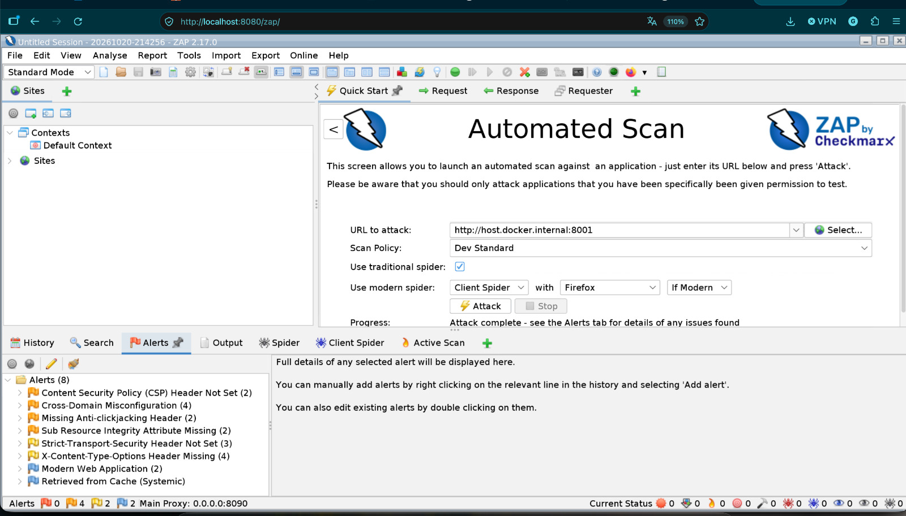
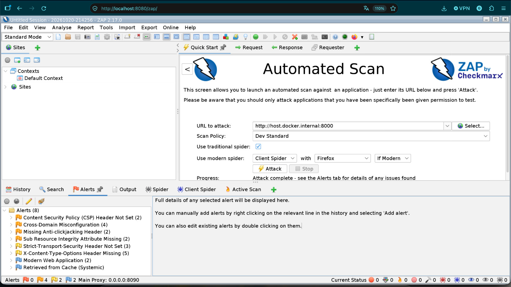
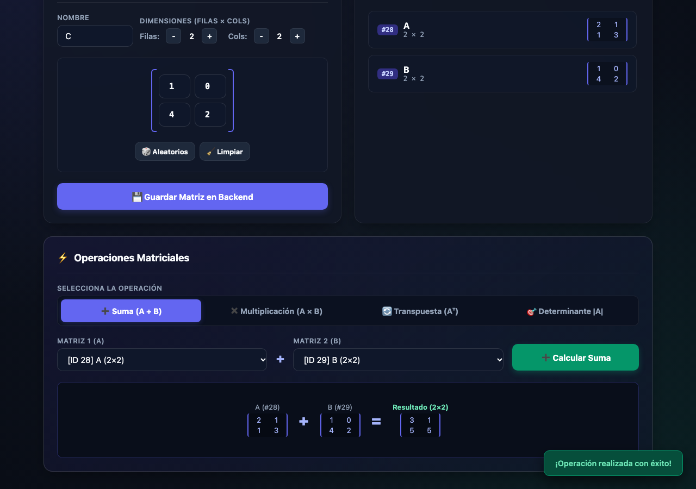
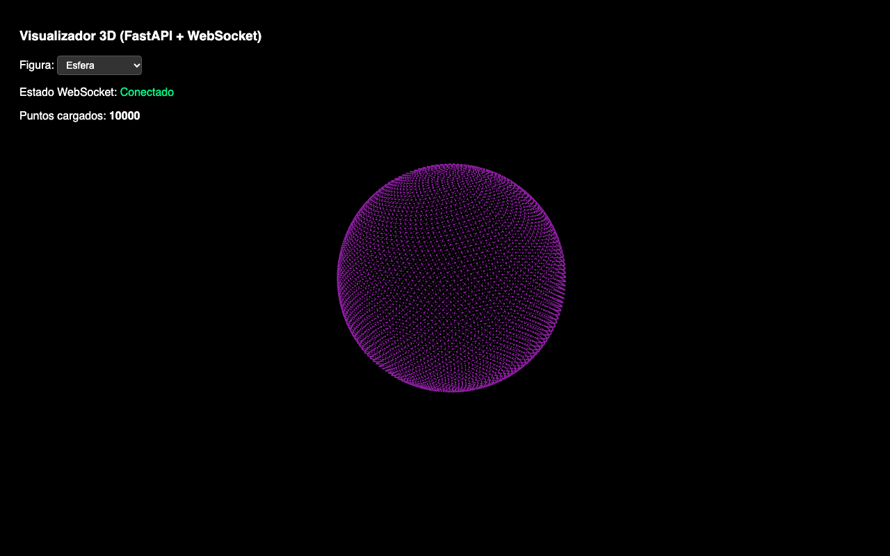

Autora: Gianina Casanova · Repositorio: github.com/Ninacruz25/calculadora · Rama: seguridad/zap-burp-mitigaciones · Pull Request: PR_URL
Herramientas: OWASP ZAP 2.17 (escaneo automático, política Dev Standard, spider tradicional + cliente), Burp Suite, revisión de código y pruebas manuales. Solo se escanearon las apps propias en entorno local (host.docker.internal:8001 y :8000).
| # | Alerta / hallazgo | Riesgo | ¿Real o falso positivo? | Mitigación aplicada | Estado final |
|---|---|---|---|---|---|
| M1 | Sin control de acceso: GET /matrices lista las matrices de todos; IDs secuenciales (IDOR) (manual) | Alto | Real. Probado: una sesión sin cookie lee la matriz cuenta_secreta de otra. | Matrices atadas a una sesión opaca (cookie sid HttpOnly + SameSite=Strict); ajena = 404. | Corregido (test) |
| M2 | Cross-Site WebSocket Hijacking: /ws/transform acepta cualquier Origin (manual) | Alto | Real. Una web en otro origen abrió el WS del visor desde Chrome. | Allowlist de Origin en el handshake (403); máx. 20 conexiones y 200 msg/s. | Corregido (test) |
| M3 | CORS reflejado + credenciales en el visor (allow_origins=*, allow_credentials=True) (manual) | Medio-Alto | Real. El servidor devolvió ACAO: http://evil.example y ACAC: true. ZAP no lo ve: no envía Origin. | Allowlist (localhost:8000), sin credenciales, solo GET. | Corregido (test) |
| M4 | Entradas sin límite (DoS): matrices de cualquier tamaño, cadenas ilimitadas, almacenamiento sin tope (manual) | Medio | Real. Det. 400×400 aceptado; ×300 tarda 0,9 s y crece n³. | ≤50×50, ≤10 matrices, |x|≤1e12, nombre ≤60, ≤100 matrices/sesión, WS ≤1 KB. | Corregido (test) |
| M5 | Robustez/integridad: NaN/overflow → 500; {"rx":"abc"} o [1,2,3] tumba el WS; matriz irregular suma en silencio con resultado incorrecto (manual) | Medio-Bajo | Real. Reproducido los tres casos. | Validación Pydantic (rectangular, finita); handler 422 sin eco de input; el WS responde error y sigue vivo. | Corregido (test) |
| M6 | Superficie expuesta: /docs, /openapi.json, URL interna en /, puertos en 0.0.0.0, contenedor root, dependencias sin fijar (manual) | Bajo | Real. | ENABLE_DOCS=1 para activarlos; puertos 127.0.0.1; usuario no root, cap_drop; versiones fijas. | Corregido |
| Z1 | Content Security Policy (CSP) Header Not Set (2 + 2) | Medio | Real (defensa en profundidad: sin CSP, un XSS futuro ejecuta todo). | CSP por middleware. JS/CSS movidos a /static; onclick= reemplazado por data-action. | Corregido. Puede quedar “style-src unsafe-inline” en la calculadora (ver abajo) |
| Z2 | Missing Anti-clickjacking Header (2 + 2) | Medio | Real (la UI podía enmarcarse en otra web). | X-Frame-Options: DENY + frame-ancestors 'none'. | Corregido |
| Z3 | Sub Resource Integrity Attribute Missing (2 + 2) | Medio | Real: recursos de terceros (Google Fonts en la calculadora, three.js de cdnjs en el visor) ejecutados/aplicados sin verificar. | Se eliminaron los terceros: fuentes del sistema y three.min.js servido local (mismo hash SHA-384 que cdnjs). | Corregido |
| Z4 | X-Content-Type-Options Header Missing (4 + 5) | Bajo | Real (MIME sniffing). | X-Content-Type-Options: nosniff. | Corregido |
| Z5 | Cross-Domain Misconfiguration (4 + 4) | Medio | Falso positivo respecto a nuestro código: la calculadora no tiene CORS; las ocurrencias corresponden a URLs de terceros (Google Fonts en la calculadora, cdnjs en el visor; ACAO: * por diseño en recursos públicos; se confirma en Alerts → URLs de la alerta). El CORS inseguro real del visor es M3, que ZAP no detectó. | Al quitar los terceros desaparece la causa; M3 se corrige aparte. | Debería desaparecer |
| Z6 | Strict-Transport-Security Header Not Set (3 + 3) | Bajo | Falso positivo en este entorno: HSTS solo lo respetan los navegadores sobre HTTPS; el laboratorio es http://localhost. Sería real en producción. | Soporte listo: ENABLE_HSTS=1 detrás de TLS. No se activa en HTTP (el navegador lo ignora). | Sigue apareciendo (esperado) |
| Z7 | Modern Web Application (2 + 2) | Info | Falso positivo: aviso para el spider (la app usa JS), no es una debilidad. | — | Sigue apareciendo (esperado) |
| Z8 | Retrieved from Cache (Systemic) | Info | Falso positivo para estos datos: corresponde a recursos públicos de terceros (fuentes/CDN), no a datos de la app. Con datos sensibles sí importaría (ver §4). | Cache-Control: no-store en las dos apps. | Debería desaparecer |
Los números entre paréntesis son las instancias de cada alerta en la calculadora (puerto 8001) y el visor (puerto 8000) del escaneo inicial. La columna “estado final” de las alertas Z1–Z8 es lo esperado según el diseño de cada corrección; se confirma con el re-escaneo del anexo B. Los hallazgos M1–M6 se verifican con pruebas automáticas, no con ZAP.
Criterio: riesgo = impacto × probabilidad × facilidad de explotación, mirándolo con la pregunta del paso 3: ¿qué pasaría si estos números fueran datos sensibles? Un fallo que da acceso a datos ajenos o lo puede disparar una web externa sin que la víctima haga nada pesa más que uno que exige un atacante ya dentro, y los fallos de “defensa en profundidad” (cabeceras) pesan menos porque necesitan otro fallo previo.
GET), sin autenticación.POST sin autenticar degrada el servicio para todos (disponibilidad).Ambos servicios con docker compose up; ZAP contra http://host.docker.internal:8001 (calculadora) y :8000 (visor). 8 alertas por app: 0 altas, 4 medias, 2 bajas, 2 informativas. Las alertas son las mismas salvo el conteo de X-Content-Type-Options (4 vs 5).


Qué viaja (todo en claro, http:// y ws://, sin TLS):
POST /matrices con {"nombre","datos":[[…]]}; GET /matrices devuelve todas las matrices; operaciones como POST /operaciones/sumar?id1=1&id2=2 (IDs en la URL, secuenciales).GET /api/figura/{nombre} (10 000 puntos); y por WebSocket, ~60 mensajes/s: el navegador envía {"tx","ty","tz","rx","ry","rz","escala"} y recibe {"matrix":[16 floats],"status":"ok"}.Qué se podía manipular: con Burp Repeater cambiar id1/id2 (antes de la corrección devolvía datos de otros); editar un frame WS (escala:1e308, rx:"abc") o reenviarlo con otro Origin; en Intercept modificar la respuesta matrix y mover/deformar el modelo (no hay integridad ni TLS); inyectar Origin: http://evil.example y obtener CORS reflejado con credenciales.
evidencias/burp/01_http_history.pngevidencias/burp/02_websocket_history.pngevidencias/burp/03_repeater_idor.pngevidencias/burp/04_ws_origin_y_tamper.pngLa clasificación completa está en la tabla del §1. Ni ZAP ni Burp reportaron M1–M5: ZAP hace análisis pasivo + ataques genéricos pero no sabe que /matrices debería ser privado ni envía Origin al WebSocket; se encontraron leyendo main.py y probando a mano. Pruebas contra la versión vulnerable:
### 1. CORS visor con origen hostil
HTTP/1.1 200 OK
access-control-allow-origin: http://evil.example
access-control-allow-credentials: true
### 2. Cabeceras de seguridad calculadora
server: uvicorn
### 3. Listado global sin auth
{"nombre":"cuenta_secreta","datos":[[1500000.5,42.0]],"id":1}
[{"nombre":"cuenta_secreta","datos":[[1500000.5,42.0]],"id":1}]
### 4. NaN / Infinity
escala=1e308 -> 200
NaN -> 500
### 5. Matriz irregular en /calc
ragged suma -> 200
### 6. DoS: determinante 400x400
det 400x400 -> 200 en 0.083363s
### 7. Info leak raiz visor
http://calculadora:8000
/docs visor 200, /docs calc 200
/openapi calc 200
Origin evil.example aceptado -> {"matrix":[2.0,0.0,0.0,0.0,0.0,1.4142135623730951,1.414213562373095,0.0,0.0,-1.4
rx='abc' -> conexion cerrada/ error: ConnectionClosedError no close frame received or sent
lista JSON -> error: ConnectionClosedError no close frame received or sent
Traceback (most recent call last):
File "/usr/local/lib/python3.11/asyncio/selector_events.py", line 999, in _read_ready__data_received
data = self._sock.recv(self.max_size)
^^^^^^^^^^^^^^^^^^^^^^^^^^^^^^
ConnectionResetError: [Errno 104] Connection reset by peer
Ver §2 (ordenada por riesgo y con su criterio).
calculadora_matrices/main.py, repository.py: un middleware asigna a cada navegador un sid aleatorio de 128 bits (cookie HttpOnly, SameSite=Strict) y el repositorio guarda y filtra por dueño. Una matriz ajena responde 404, igual que una inexistente. Resuelve la causa (falta de autorización por objeto), no solo oculta IDs.modelo-3D/main.py: el navegador siempre envía Origin; el handshake del WS se rechaza (403) si no está en ALLOWED_ORIGINS. CORS pasa de *+credenciales a lista blanca, sin credenciales y solo GET. Ya no basta con que la víctima visite una web hostil.models.py (calculadora) y Parametros (visor): se valida en la frontera (rectangular, finita, ≤50×50, rangos de la transformación), el WS limita tamaño, tasa y conexiones, y un mensaje inválido devuelve error sin cerrar el canal. Un manejador 422 propio no devuelve el input rechazado (con NaN eso causaba un 500).script-src 'self'; sin unsafe-inline en scripts), X-Frame-Options, nosniff, Referrer-Policy, Permissions-Policy, Cache-Control: no-store. Para cumplir la CSP se sacaron el JS y el CSS a /static, se cambiaron los 15 onclick por data-action y se eliminaron Google Fonts y el CDN de three.js.cap_drop: ALL, no-new-privileges, puertos solo en 127.0.0.1, dependencias fijadas, --no-server-header, /docs apagado por defecto.evidencias/zap/despues_calculadora_8001.pngevidencias/zap/despues_modelo3d_8000.pngAlertas que se espera que sigan y por qué: HSTS (no hay HTTPS en local; ver Z6), Modern Web Application (informativa), y en la calculadora posiblemente CSP: style-src unsafe-inline: los resultados se pintan con atributos style="…" generados por JS; quitar unsafe-inline de estilos exige reescribirlos como clases CSS. Se priorizó script-src estricta porque ahí vive el riesgo de XSS; el de estilos queda como deuda documentada.
Pruebas manuales tras la corrección (mismas que el paso 4):
### Cabeceras calculadora
set-cookie: sid=9a694a6ac499a678463f28ffcceee5d9; HttpOnly; Path=/; SameSite=strict
content-security-policy: default-src 'self'; script-src 'self'; style-src 'self' 'unsafe-inline'; img-src 'self' data:; connect-src 'self'; object-src 'none'; base-uri 'self'; form-action 'self'; frame-ancestors 'none'
x-frame-options: DENY
x-content-type-options: nosniff
referrer-policy: no-referrer
permissions-policy: camera=(), microphone=(), geolocation=()
cross-origin-resource-policy: same-origin
cache-control: no-store
### Cabeceras visor /view
content-security-policy: default-src 'self'; script-src 'self' https://cdnjs.cloudflare.com; style-src 'self'; img-src 'self' data:; connect-src 'self' ws://localhost:8000 wss://localhost:8000; object-src 'none'; base-uri 'self'; form-action 'self'; frame-ancestors 'none'
x-frame-options: DENY
x-content-type-options: nosniff
referrer-policy: no-referrer
cache-control: no-store
### 1. CORS visor con origen hostil
HTTP/1.1 200 OK
(sin cabeceras access-control = el navegador bloquea la lectura)
### 2. Matrices privadas por sesion
{"nombre":"cuenta_secreta","datos":[[1500000.5,42.0]],"id":13}
sesion A:
[{"nombre":"cuenta_secreta","datos":[[1500000.5,42.0]],"id":13}]
atacante (otra sesion):
[]
### 3. NaN / overflow
{"detail":[{"loc":["body","m"],"msg":"Value error, los valores deben ser finitos y de magnitud <= 1e+12"}]} -> 422
overflow cadena -> 422
### 4. Matriz irregular
ragged suma -> 422
### 5. DoS determinante 400x400
det 400x400 -> 422
### 6. Info leak
{"status":"online","message":"API de Modelo 3D activa (las matrices las calcula calculadora_matrices)","endpoints":{"figuras":"/api/figuras","figura":"/api/figura/{nombre}","csv_model":"/api/modelo-csv","websocket":"/ws/transform","viewer":"/view"}}
/docs visor 404
/openapi.json calc 404
curl: (2) no URL specified
curl: try 'curl --help' or 'curl --manual' for more information
{"detail":"figura desconocida. Opciones: esfera, cubo, toroide"}
origen evil.example: handshake rechazado, HTTP 403
origen legítimo: '{"rx":45,"escala":2}' -> {"matrix":[2.0,0.0,0.0,0.0,0.0,1.4142135623730951,1.414213562373095,0.
rx='abc': '{"rx":"abc"}' -> {"status":"error","detail":"parámetros inválidos"}
rx='abc': '{"rx":10}' -> {"matrix":[1.0,0.0,0.0,0.0,0.0,0.984807753012208,0.17364817766693033,0
lista JSON: '[1,2,3]' -> {"status":"error","detail":"parámetros inválidos"}
lista JSON: '{"rx":10}' -> {"matrix":[1.0,0.0,0.0,0.0,0.0,0.984807753012208,0.17364817766693033,0
NaN: '{"rx":NaN}' -> {"status":"error","detail":"parámetros inválidos"}
mensaje 20MB: '{"rx": 1, "pad": "AAAAAAAAAAAA' -> conexión cerrada (ConnectionClosedError)
Suite e2e (Playwright): las 8 pruebas originales siguen pasando y se añadieron 15 de regresión de seguridad. Esas 15 se ejecutaron también contra la versión vulnerable (commit base): 14 fallan (la que pasa solo comprueba que la calculadora sigue calculando), así que realmente detectan los fallos.
Contra la versión vulnerable (commit base): 14 failed, 1 passed Contra la versión corregida: 23 passed in 4.43s
Los 8 e2e originales cambiaron en un punto: elegían matrices por ID global (select_option("3")) y solo funcionaban porque todos los usuarios compartían la misma lista; ahora eligen por posición dentro de su propia lista (esa dependencia era M1).


Alertas como Retrieved from Cache o la falta de HSTS parecen inocuas con matrices de ejemplo; se clasificaron como falsos positivos para este laboratorio. Con datos sensibles dejarían de serlo. Qué podría hacer un atacante, según lo demostrado en este trabajo:
| Capacidad del atacante | Cómo (ya probado salvo indicado) | Protección que aplicaría |
|---|---|---|
| Ver los datos de otros | M1: GET /matrices devolvía todo; IDs secuenciales adivinables. | Autenticación + autorización por objeto (dueño/rol) en cada consulta; IDs no secuenciales (UUID); respuestas 404 iguales para “no existe” y “no es tuyo”. Aplicado (sesión). |
| Leer el tráfico en la red (Wi-Fi, proxy) | Burp muestra cuerpos, URLs y frames WS en claro (http/ws). | TLS en todo (https/wss) + HSTS (por eso Z6 sí sería real en producción); cookies Secure. Cifrado en reposo del almacén. |
| Modificar montos en tránsito o en el origen | Sin TLS ni firma, Burp altera una respuesta (matrix) y el cliente la acepta. Con POST abierto se pueden crear/alterar registros. | TLS evita el MITM; validación estricta de entradas y rangos (aplicado); control de integridad (HMAC/firmas) y pistas de auditoría para operaciones críticas; permisos de escritura separados de los de lectura. |
| Actuar en nombre de la víctima desde otra web | M2/M3: CSWSH y CORS reflejado con credenciales (Origin evil.example aceptado). | Allowlist de Origin (aplicado), cookies SameSite=Strict (aplicado), tokens CSRF/Bearer en vez de cookies ambientales para operaciones de escritura. |
| Dejar sin servicio / forzar errores que filtran datos | M4/M5: entradas enormes, NaN, errores 500 y mensajes que repetían la entrada. | Límites y rate limiting (aplicado en parte); errores genéricos sin eco de datos (aplicado); no registrar valores sensibles en logs. |
| Recuperar datos de cachés | Retrieved from Cache: copias en navegador/proxy/CDN. | Cache-Control: no-store (aplicado); sin terceros (CDN/fuentes) que vean IP, Referer o contenido (aplicado). |
Idea de fondo: un dato es sensible por quién puede leerlo o cambiarlo, no por su forma. Una matriz de rotación y una matriz de saldos viajan igual; lo que cambia es el costo de que alguien ajeno la vea o la altere.
ZAP encontró bien lo que se ve en una respuesta HTTP aislada (cabeceras, SRI, CORS de terceros): 8 alertas útiles pero de impacto medio-bajo. No encontró los 5 hallazgos más graves (M1–M5), porque requieren entender la intención de la aplicación (“estos datos son de cada usuario”), probar con un Origin hostil o con un frame WebSocket mal formado, o reconocer que sumar matrices irregulares sin error es un bug de integridad. Además, algunas alertas son falsos positivos según el contexto (HSTS en HTTP local; CORS de Google Fonts) y hay que poder explicar por qué. Las herramientas son un buen primer filtro y una red de regresión, no un veredicto: la revisión de código, el modelado de amenazas y las pruebas de regresión propias (las 15 de este trabajo) son las que cierran el trabajo.
Anexo A – Reporte ZAP antes: evidencias/zap/reporte_antes_calculadora.html, reporte_antes_modelo3d.html (y la lista de alertas en la captura del paso 1).
Anexo B – Reporte ZAP después: evidencias/zap/reporte_despues_calculadora.html, reporte_despues_modelo3d.html.
Anexo C – Pruebas: evidencias/antes/, evidencias/despues/, evidencias/ws_probe.py, test_e2e/test_regresion_seguridad.py.
evidencias/zap/anexo_a_alertas_antes_calculadora.pngevidencias/zap/anexo_a_alertas_antes_modelo3d.png